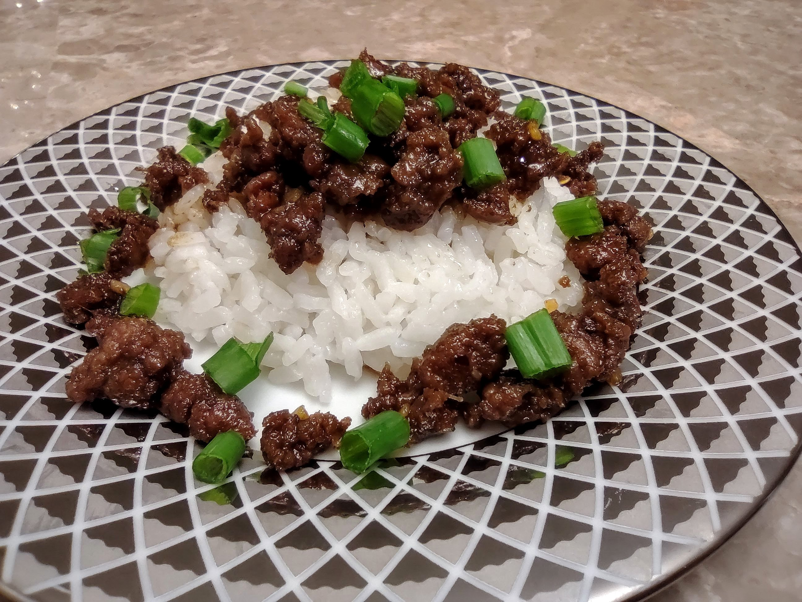
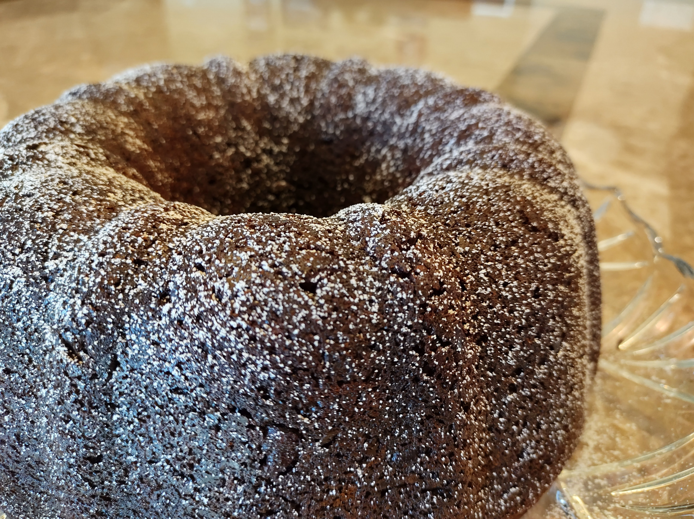
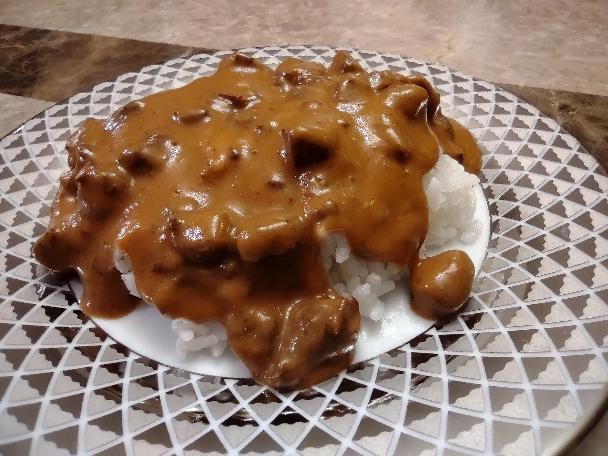
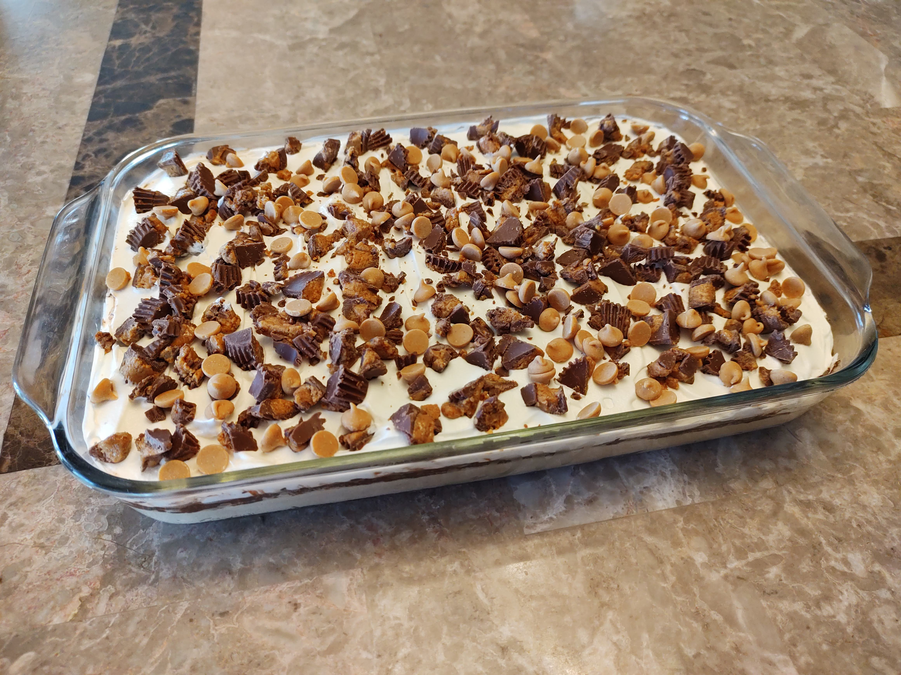
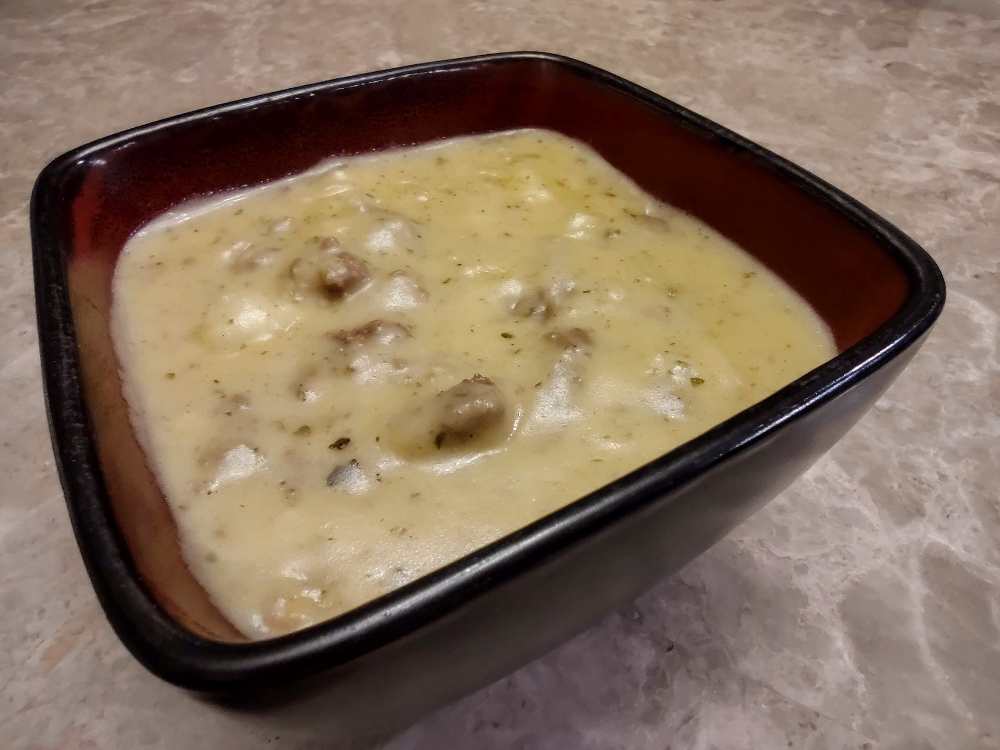

I didn’t really get into cooking or baking until I was older because my mom is amazing and makes home-cooked meals pretty consistently. Then I was challenged to plan dinner for two weeks, where I had to decide what to cook, go buy the ingredients, and then cook it. I had a lot of fun doing it, and I started making a recipe book too so I can have my favorite recipes at hand whenever I want to cook something! I have a few of my favorite meals and desserts listed below, along with the recipes if you want to try them out (they are delicious)!

Korean Beef 'n Rice
This recipe features ground beef that is sweet, salty, and has just a little bit of kick! It is meant to be eaten with rice, and you can top it with green onions if you like that sort of thing. You have to be careful not to put too many on though, otherwise the onion flavor totally overwhelms the other flavors. Whether this dish is truly Korean or not, I don't know, but it is still really tasty!
Ingredients
1 lb. ground beef
¼ tsp. ground ginger
½ cup brown sugar
¼ cup soy sauce (or Simple Truth coconut aminos all-purpose seasoning sauce)
1 T. sesame oil
3 cloves of garlic
Green onions, chopped
¼ tsp. red pepper flakes
Salt and pepper to taste
Cooked rice (2-3 cups of uncooked)
Directions
Fully cook the beef in a skillent, and drain the fat and grease after it is cooked.
Add the remaining ingredients, except for the green onions. Let simmer for 5 minutes and serve over rice and top with chopped green onions.

Too Much Chocolate Cake (The Best Kind)
The best thing about this cake is the chocolate...and it's so good that you don't even need any frosting on the top! The cake is also very moist, not dry and crumbly like some cakes...though it will go stale if you cut into it and leave it uncovered. There's lots of little chocolate chips hiding inside the cake too, and when you eat a slice after you pull it out of the oven, mmmMMMmmm it's all warm and the chocolate chips are all melty! If you love chocolate cake, you'll definitely want to try this one out!
Ingredients
1 pkg. (18.25 oz) devil's food cake mix
1 pkg. (5.9 oz) chocolate pudding mix
1 cup sour cream
1 cup vegetable oil
4 eggs, beaten
½ cup water
2 cups semisweet chocolate chips
Directions
Preheat oven to 350°F.
In a large bowl, mix the cake mix, pudding mix, sour cream, oil, beaten eggs, and water. Stir in the chocolate chips and pour batter into a well-greased 12 cup Bundt pan.
Bake for 50 to 55 minutes, or until top is springy to the touch and a wooden toothpick inserted comes out clean. Cool cake thoroughly in pan at least an hour and a half before inverting onto a plate. If desired, dust the cake with powdered sugar.

Beef Stroganoff
This has always been one of my family's favorite dinners, and we would have it several times a year when we went to my grandparent's house for birthday dinners! You can serve it with rice or noodles, but I personally prefer rice because it soaks up the gravy, but it's all preference. It usually needs a little bit of salt once you put it on your plate, and it really brings out the flavor once you do. This is definitely one of my comfort foods, and I hope you love it as much as I do!
Ingredients
2 T. oil
2 lb. round steak, cubed
1 can (6 oz.) tomato paste
4 T. minced, dried onion
4 beef bouillon cubes
2 T. Kitchen Bouquet browning and seasoning sauce
Heaping ⅔ cup flour
2 cup water
2 cup sour cream
Salt and pepper to taste
Directions
Mix the water and flour together and set aside.
Turn the Instant Pot to sauté mode and heat the oil with the lid off. Add the cubed steak, some salt and pepper (to your liking), and cook until browned. Turn sauté mode off.
Add 2 cups of water (not the ones listed in ingredient list), tomato paste, onion, beef bouillon, and kitchen bouquet to the pot. Secure and lock the Instant Pot lid, checking that the knob is set to the “sealing” position. Then push the pressure cook button and set it for 25 minutes. When the timer goes off, release the pressure by using a wooden spoon to switch the knob to “venting.” Once the red indicator on the top of the lid goes down and no steam is coming out of the vent, you can open the Instant Pot.
Cancel the pressure cook mode and then turn the sauté mode back on. Slowly add the flour and water mixture and whisk it in until the sauce thickens and bubbles. Turn off sauté mode and slowly add in the sour cream when the sauce stops bubbling.
Serve the meat sauce over your choice of rice or noodles.

Peanut Butter Lasagna
I know, I know...when you hear me say "peanut butter" and "lasagna" in the same sentence, that sounds like a pretty nasty dish! Who wants peanut butter with noodles, cheese, and tomato sauce? Not me! Luckily for you, that's not what this recipe is made of! It's a really rich dessert that has an Oreo crust, a light and fluffy peanut butter layer, a chocolaty layer, and a cool whip layer dotted with Reese's and peanut butter chips. Lots of calories...but it's 100% worth it!
Ingredients
Crust
36 Oreo cookies
⅓ cup butter, melted
Peanut Butter Layer
8 oz. cream cheese, softened
1 cup smooth peanut butter
1 cup powdered sugar
¼ cup milk
1 ½ cups whipped topping (Cool Whip)
Chocolate Layer
2 boxes of instant chocolate pudding
2 ¾ cups milk
Topping
Whipped topping (leftover from PB layer)
1 bag Reese's Mini Peanut Butter Cups
Peanut butter chips
Chocolate syrup (optional)
Directions
Crust
In a food processor, finely crush oreo cookies. Stir in melted butter. Press into a 9x13" pan or glass dish. Place in the freezer while preparing the next layer.
Peanut Butter Layer
With mixer on medium, mix cream cheese, milk, and peanut butter until fluffy. Slowly add in powdered sugar. Gently fold in whipped topping.
Spread the peanut butter layer on the Oreo crust. Place in the freezer while preparing the next layer.
Chocolate Layer
In a bowl, mix both boxes of pudding mix and the milk. (This will be less milk than called for on the pudding box. You want this layer to be thicker than pudding).
Spread the chocolate layer onto the peanut butter layer. Place in the fridge and allow to set for about 5 minutes.
Topping
Top with remaining whipped topping, chopped Reese's Mini Cups, peanut butter chips, and chocolate sauce. Refrigerate at least 3 hours.

Cheeseburger Soup
This soup is a creamy cheese base with a nice salty flavor from the hamburger meat. The "soup" is fairly thick, so you can eat it without leaving a whole bowl of liquid behind. It's not exactly like eating a cheeseburger, but it's nice for winter nights spent at home!
Ingredients
½ to 1 lb. ground beef
¾ cup chopped onion
¾ cup shredded carrots (optional)
¾ cup diced celery (optional)
1 tsp. dried basil
1 tsp. dried parsley flakes
4 T. butter, divided
3 cups chicken broth
4 cups peeled and diced potatoes
¼ cup flour
2 cups shredded cheddar cheese
1 ½ cups milk
¾ tsp. salt
½ tsp. pepper
¼ cup sour cream
Directions
Brown the ground beef in a 3-quart saucepan. Drain and set aside. In the same saucepan, add 1 T. butter and the onion, carrots, parsley, basil, and celery. Sauté until tender.
Add the broth, potatoes, and beef and bring to a boil. Reduce heat, cover and simmer 10-12 minutes or until potatoes are tender.
In a small skillet, melt remaining butter and add the flour. Cook and stir for 3-5 minutes or until bubbly. Add to the soup and bring to a boil. Cook and stir for 2 minutes. Reduce heat to low.
Stir in the cheese, milk, salt, and pepper. Cook and stir until the cheese melts. Remove from heat and blend in sour cream.